Welcome to Max Lopez' Portfolio
To scroll through my projects, you can use the scroll wheel, the arrow keys, or just click with your mouse.
Website concept, design & content by Max Lopez
Website programming by David Schneider

Introduction
Hi, I’m Max! I’m currently a masters student at Boston University where I am studying Product Design and Manufacture. I was previously at Rensselaer Polytechnic Institute where I earned a dual B.S. in Design, Innovation, Society & Business Management. I hope you enjoy viewing my portfolio where I showcase my skills in design thinking, prototyping, CAD, and more.
Size-Changing Suitcase
Fall 2024 to Present
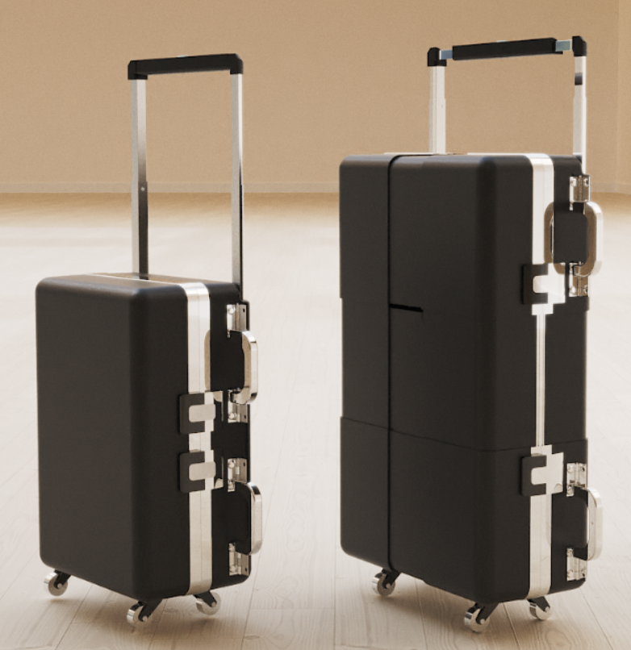Redefining the Limits of a Suitcase
- Conducted Extensive Market Research
- Developed Numerous GD&T Drawings
- Over Year Long Iterative Design Process
- Produced an MVP
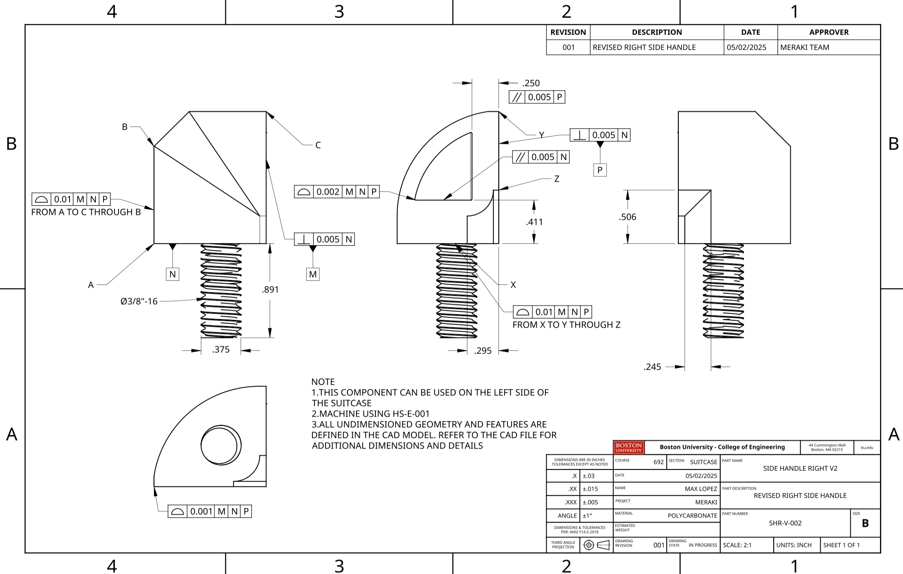
For the course “Advanced Product Design”, a two semester course, three teammates and I were tasked with designing a product that would solve an issue within a broad subject area, in our case travel. After a couple of brainstorming sessions, we came up with three very different concepts, one of which was a “modular” suitcase. This design would let you switch out different components to suit specific situations, and we decided to go forward with this concept. We sent out a survey that had a multitude of questions about what potential customers might want in their suitcase, and we received about 150 responses. From this information, one thing that stuck out was that a large number of respondents wanted the ability to change the size of the suitcase. We added this as a pipe dream since we hadn’t figured out what this even meant, but this data point stuck out all the same. We ended up deciding to fully focus on a size changing design, and began figuring out not only how to make it work, but if it even could work.
After doing some calculations to determine what physical (applied force and scale) constraints we had to work with, we began working out a design that would allow a suitcase to go from a carry on to checked size in a matter of seconds. This process took a couple months of sketching, challenging our designs, mocking them up in OnShape, and repeating. We eventually found a design that not only functioned, but would allow the user to do the expansion/contraction with just one movement. From this core, we created a series of CAD models that could be used to simulate the entire motion of the system. From the final iteration of the model for the fall semester, we created a package of blueprints containing about 100 individual drawings.
 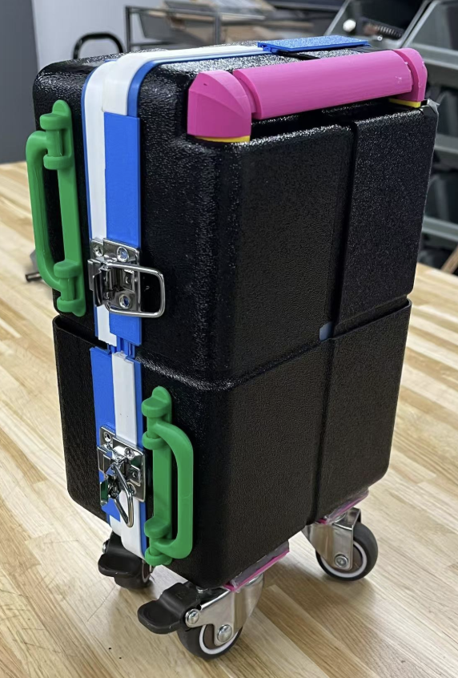
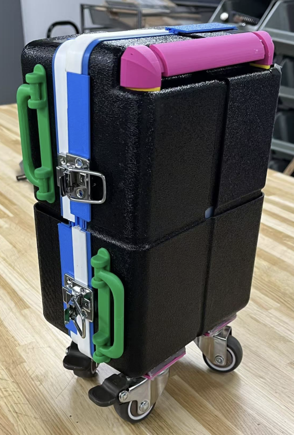
In the spring semester, our primary objective was to develop a physical prototype, as well as make any refinements as needed. I was tasked with both improving and creating the handle. On a regular suitcase, this may seem relatively straightforward, but because our design expands, so too does our handle. The design that had been created in the fall, while functional, had a large number of components, some of which we hadn’t realized would be difficult to either manufacture and/or fit together. I decided to kill two birds with one stone by not only drastically reducing the part count while keeping the function near identical, but redesigning the components such that they could all easily either slide into each other or screw into each other during assembly. This required numerous revisions and 3D printed test parts to ensure everything physically worked with each other. Eventually, we had a fully working handle as well as a fully working half-scale prototype of the entire suitcase. This used a combination of 3D printed parts, different adhesives, and thermoformed polycarbonate to realistically simulate the full sized model as much as possible. We finally created a new set of blueprints to reflect the changes, this time only needing 70 pages.
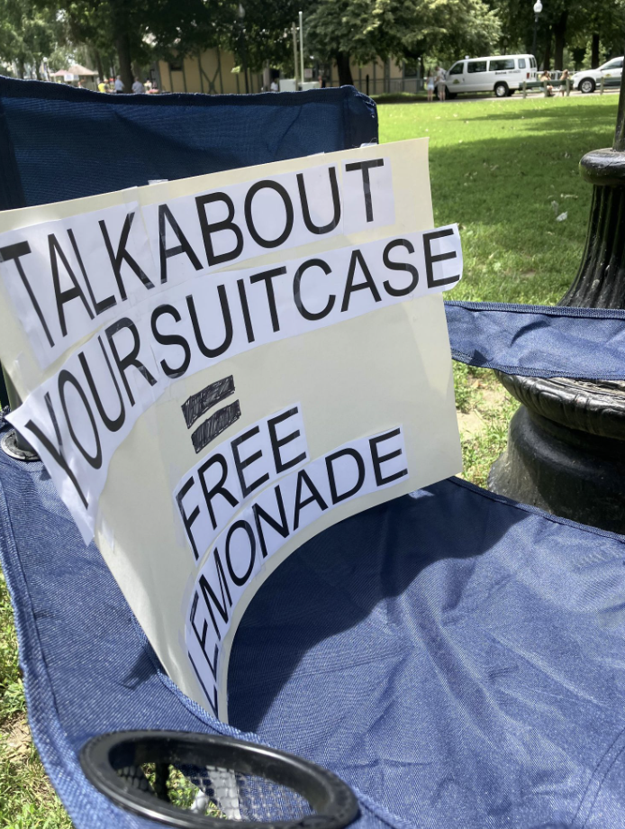After the semester, one of my teammates and I realized that we had a unique design that could solve multiple issues travelers face with their suitcases, and we didn’t want to just abandon the project. Since May 2025, we’ve been working on bringing this product to market. To do this, we did extensive customer research to verify our assumptions, primarily through customer interviews. We conducted about 10 interviews over Zoom with people who had left their emails on our fall survey, or people who had been recommended by previous interviewees. We conducted an additional 24 interviews by giving out free lemonade during the July 4th weekend at the Boston Common, which enabled us to reach a wider and more diverse audience. From the data gathered from these interviews, we’ve been able to conclude soundly that there’s a significant market for our design. We have also been working with lawyers to patent the design. Our next steps will be to work out a fleshed out business plan and to finalize the patent so we can begin getting investors and finding companies to work with on bringing the suitcase to life.


Ratchet Calendar
Spring 2025
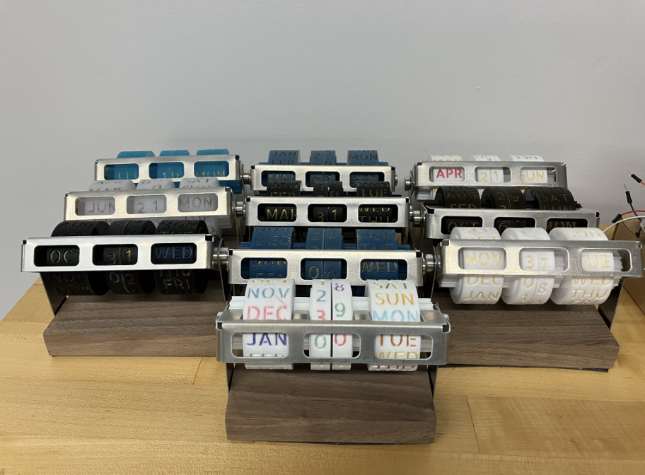A Design Process Fit For an Enterprise
- Document Control
- Enterprise Data Management
- Woodworking
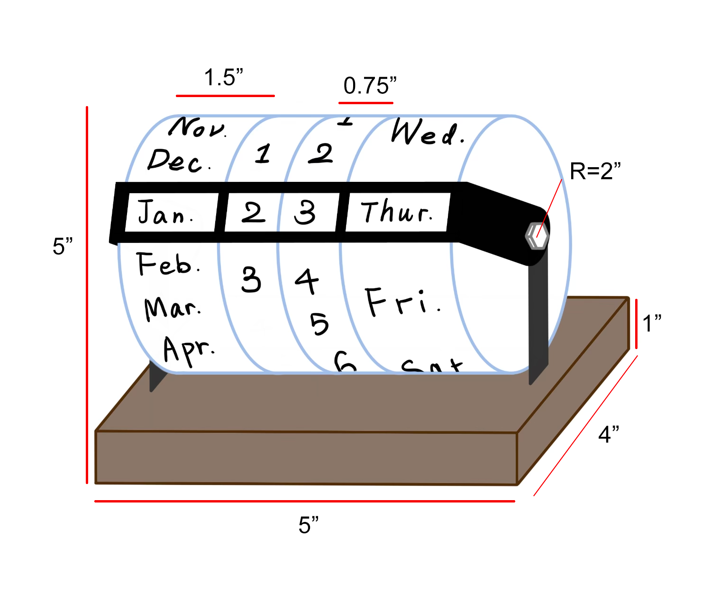
For the graduate course “Product Realization”, teams of four were tasked with creating a simple design that could be mass produced, an element that was tested as we had to create 13 copies of the product. Additionally, extensive document creation and control was required for the entire project. Our group ended up creating a “ratchet calendar”, a rolling calendar that makes a satisfying clicking noise every time a roller is moved. While I did help with the development of the design and worked on some of its construction, focusing particularly on the wooden base, my main job was document management. Over the course of the semester, I not only managed and enforced our Enterprise Data Management document, but maintained every single document as to remain consistent with each other and to have accurate, up to date information. Part of this was done through having a clearly defined style guide that I could use and make sure my teammates used, but it was also partially just constantly checking each document, and checking even more frequently as deadlines approached. This experience was a great simulation of a realistic design process, particularly due to the focus on the documentation. I was surprised that I ended up enjoying and thriving in this environment, and believe that I handled our documentation management exceptionally, as indicated by our team receiving the on-average highest scores for each documentation checkpoint out of the entire class.
 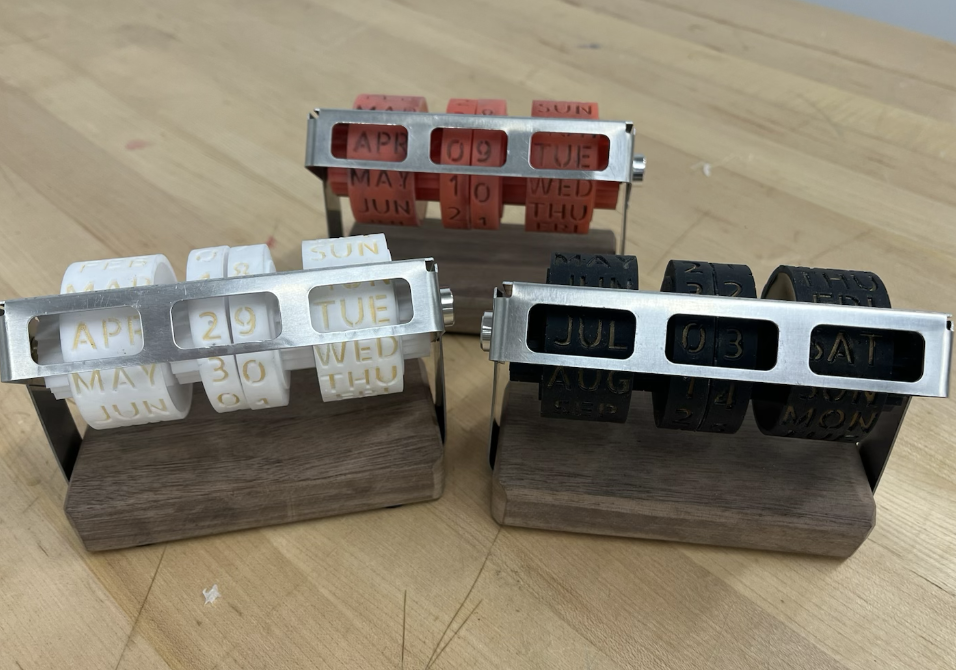
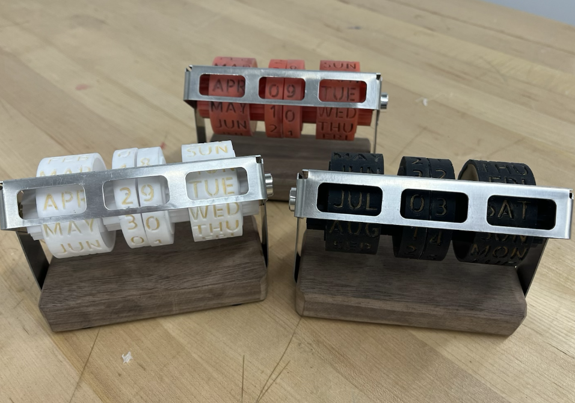
Stylophone Player
Summer 2024
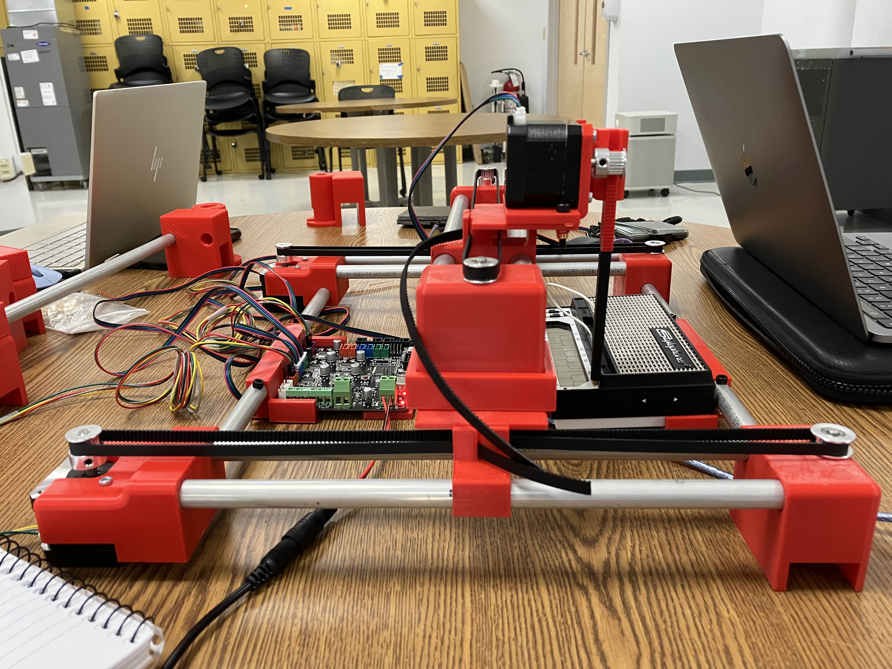Crafting a Cartesian Motion Creation
- Solidworks
- Arduino
- Modular Component Design
During a product design course I took in Summer 2024, I was tasked with designing a 3D Printed, custom designed device that has 2.5 degrees of movement freedom. My team of three quickly determined that we wanted to create a device that could play a musical instrument known as a "Stylophone". The stylophone is a small piano-like device that uses a pen with a metal tip, wired to the Stylophone, to play electronic notes. We concluded that the pen already being part of the Stylophone would ensure that it would work well as long as we could get it to move around correctly, and that making a device that could play a physical instrument just sounded like fun. We first sketched what a singular, modular linear actuator would look like, primarily to get measurements down. Then, we created a sketch of what we envisioned the entire unit to look like, making sure to add some extra supports so the unit could remain stable.


Our next goal was to perfect a single linear actuator that would then be replicated to create the three actuators of the final device. Our first iteration functioned fine but would go through numerous iterations, whether that be due to changing the rod thickness, adjusting the heights of the two ends, or accounting for how everything needed to connect to one another. Each group member designed a component for this stage, with my component being the carriage. The biggest hurdle was designing the "teeth" that would allow it to connect to the belt. After a long period of time designing in Solidworks and a quick 3D print, I verified that the belt fit into the teeth perfectly. When I was designing the carriage, I made it as basic as possible intentionally since I knew that even once I got one that simply "worked", I was going to have to iterate it continuously to fit within the other components around it changing. This paid off, since I ended up creating about ten separate versions of the carriage during our ideation process, most of which added on to prior versions, although some had components removed, which was also made easier by the more straightforward design.

After we ideated upon the actuator multiple times, we eventually came to a design that we liked that would be able to work for all of the required functions. Once we assembled the "frame", we knew it was time to make a component that could hold the Arduino, and a component that could hold the Stylophone. I ended up designing these, and took a similar approach to both. The major change I had to make for the Stylophone version was how I printed it, as it was slightly too large to fit on the print bed. To remedy this, I cut the unit in half and printed each half separately, and we just made sure to lock it in place in the device so that the different halves were unnoticeable.


At this point, we had a near final design but there were two critical issues that we needed to address. Firstly, the Arduino code was just not working. We were usually able to move some part of the device, but never in the way we wanted it to. This would result in multiple meetings dedicated to just working through the code, bouncing ideas off of each other, and slowly but surely moving towards the Stylophone Player, well, playing the Stylophone. The other issue was the Stylophone pen, which was using both an extended tip and hot glue tread for the motor to latch onto to enable it to move up and down. This initially seemed to work, but we quickly realized that this either didn't latch on in the first place, or slowly degraded over time. We continued to recreate the hot glue tread, but time and time again, it would quickly fail. After a while, we realized that we needed something that would be consistent. We realized that since the belt moved perfectly along the motor, that means if we re-created the teeth from the carriage, it should fit. I was tasked with creating this new extension, since I had the most knowledge regarding the teeth, but it was still a difficult task, as I didn't have the CAD sketch anymore that I used for the carriage, so I had to recreate them from scratch. After a thankfully shorter process than the initial teeth, I managed to make a new extension piece that worked perfectly.

With this, the hardware of the Stylophone Player was complete. We first had it play a "chromatic scale", or a scale that just plays every note in order. This took a lot more trial and error than expected, as we learned that when variables such as speed changed, the device would become less precise and in turn, hit the wrong keys. Eventually, we fixed this simply by "honing in" on coordinates that would work no matter the speed. We then programmed in "The Imperial March" from the Star Wars franchise. When making the code, we designed it so that once we determined the correct coordinates, we could just enter the notes we wanted to play, and it should play them in that order. At this point, we encountered an odd error involving the pen pushing too hard down on the Stylophone, but just for the first note. We eventually figured out it was determining the Z-coordinates (how high up it was) incorrectly and that we had basically just gotten lucky for the chromatic scale, so we fixed this for both songs.
I am happy with how this project turned out and would consider it a success. We set out to create a device that could play a Stylophone by itself, and we accomplished exactly that. I learned a lot of valuable lessons from this project, especially since it was incredibly involved and hands on. I improved my CAD/Solidworks workflow, gained a much better understanding of electronic wiring and Arduino, further understood the strengths and limits of 3D printing, and improved my modular design thinking, both in how to apply it, but also when to use it. I also now have a better understanding of the time, resources, and skills that go into creating a project of this caliber and scale.
Solar Display
Winter and Spring 2022

Making Marketing Materials for a Client
- Rhino
- Working with Customers
- Teamwork
Note: The client’s name, logo, and identifying slogan have been redacted from the images and text due to an active NDA.
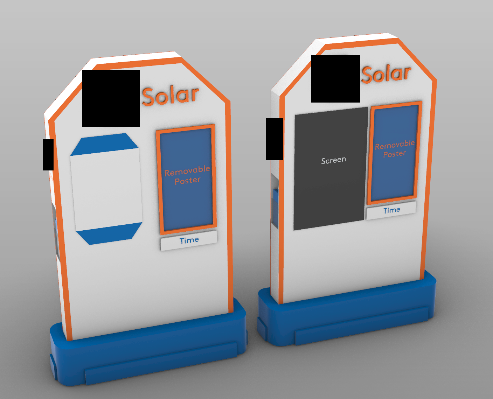I created this project during an internship at Zooka Creative, a marketing agency. While I had some smaller projects I worked on at Zooka as well, my biggest focus was creating a few types of in-store displays for an upcoming launch of a solar business for a major company. One display was designed to be thin and manned by an employee and it gave me my first taste of working with a client and their project constraints. When designing this within Rhino, I went through dozens of designs in a very short period of time.

When going through this process, I made sure to have at least the prior few iterations available at all times, as well as their individual components. This not only enabled me to iterate off of the previous design very easily, but I also was able to grab components from prior designs if I ended up preferring them after all. The second display was more involved and larger, although many of the specific decisions, such as creating a model home, were my own. I went through a similar process as I did with the first design, although I received feedback more often since the design was more involved. The first prototype that I showed off to the client in a meeting was lauded by not only the client, but the rest of my Zooka co-workers. Out of all of the designs shown to the client, mine was selected to be further developed into a full product.

I continued to develop the prototype on my own as well as work with our content team to add graphics and make appropriate changes to make the display more “store ready”. This involved creating a blueprint that included not only the design at all angles, but an “unfolded” iteration. Although I concluded my internship at Zooka before the project was completed, I last heard that my prototype was intended to be produced into a full model and displayed at the client’s headquarters.
Ludo Learn
Winter to Summer 2021

Building a Handheld Educational Device from Scratch
- User Research
- Electronics
- High-Fidelity Prototyping
During my junior year at Rensselaer Polytechnic Institute, I was given the opportunity to design something on my own with very few restrictions. I wasn't exactly sure in what space I'd be working, but I knew that I wanted it to involve a controller or handheld device so I could see if they were as enjoyable to design as I hoped they would be. With this in mind, after eight months of on and off work, I created Ludo Learn. Ludo Learn is a system that enables "enhanced education", learning beyond the classroom, in low income, low infrastructure areas.

Before even beginning work on the design, I did particularly extensive research on educational software and “edutainment”. A large part of this was creating a survey that I sent out to multiple middle school teachers who then shared it with their students, getting hundreds of responses as a result, all of which helped guide my design going forward.
 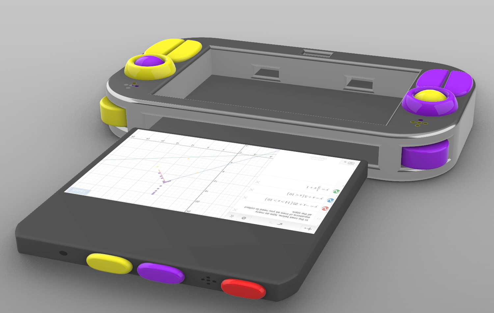
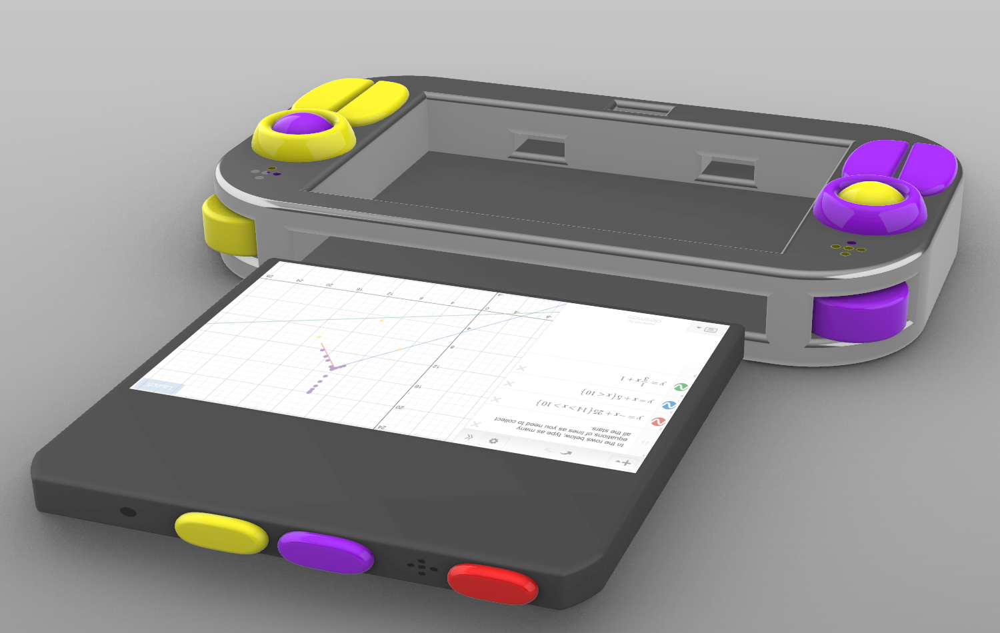
The hardware went through a few major iterations, with the first couple focusing on putting the functionality of a mouse within the form factor of a handheld. I did this since I wanted it to feel less like a video game system and closer to a traditional computer, but after user feedback and testing, I focused more on the overall shape of the design and only the most important ways the user would interact with the device.
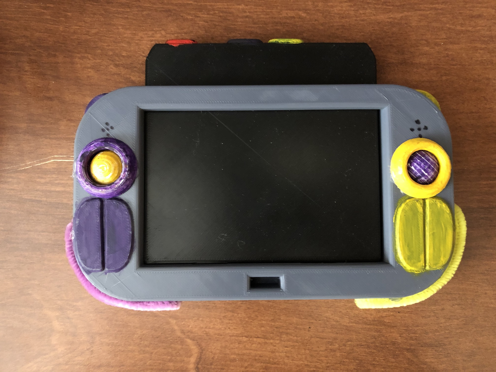Throughout the process, I was slowly self-learning some basic electronic skills that would enable me to get the hardware to interface with the software for my final prototype, and after getting the right components and connecting them together in the correct way, I had a fully functioning handheld device. Alongside a friend, I developed some basic software that could run on the device and be demoed, giving a clear picture of what the device would be like.

Columbo Coffee Collection
Winter and Spring 2020
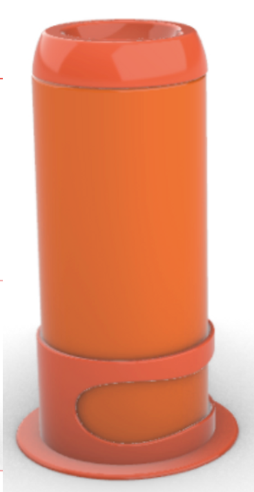Recontextualizing an Iconic Designer’s Work
- Adaptability
- Rhino
- Modular Component Design
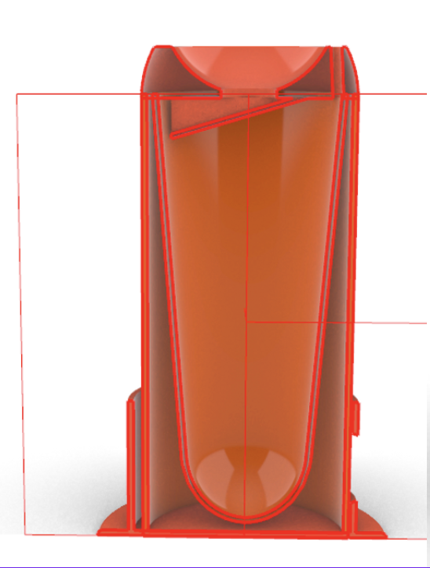
This class project took place over seven weeks, and had a very specific goal: To design a set of three objects which will help prevent burns from coffee spills in the style of designer Joe Colombo. The combination of the COVID-19 lockdown occurring in the middle of this project, as well as my working with a partner for this particular project, resulted in an interesting change of pace compared to my previous design work up to this point. My partner and I were already locked down in our separate homes by the time we created our first physical prototypes, so we could only use pictures to show one another our concepts. We worked on a lid, cup, and coaster combo set that would minimize coffee burns. My partner worked mainly on the cup, and I worked on the other two components, the lid and the coaster.

In the first iteration, I failed to show one of the key features of the lid component, the liquid retrieval/guard system, and this resulted in subpar feedback from our peers. After this setback, I decided to take a 3D model approach sooner than I had planned, and this was the right call. Despite the much more positive feedback from our peers regarding this second iteration, a change arose that would need to be made to the lid which would require the entire lid to be remade, not just modified or copied. After about an hour, I managed to perfectly replicate the lid and make the change that was needed. This project allowed me to expand and show my proficiency with the Rhino CAD software, especially my ability to relate new aspects of a model to the older ones. This was not only demonstrated when I replicated the lid perfectly, but also when I had to fit the coaster and lid around the cup, which had been made separately from the other two components.
Gasket
Summer 2024
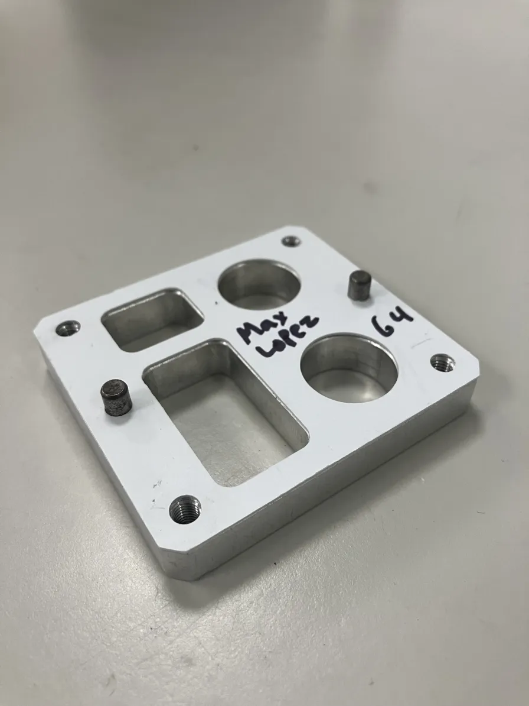Creating a Cover That Fits Like a Glove
- CNC Milling
- Solidworks
- CAM Software

Another project from Summer 2024 was to create a gasket cover with one goal in mind: precision. Since gasket covers can be used in a wide array of mechanical designs, including some where errors of a fraction of a millimeter matter, ensuring that the otherwise simple gasket cover has the exact dimensions needed is of the utmost importance. I began by taking a multitude of measurements from the gasket using a caliper, making sure to take each measurement a few times to ensure accuracy. I then created a sketch primarily to note all of my measurements, especially since if I got all of the measurements right, I technically wouldn't even need the sketch, but of course I created one anyway just to keep everything straight.
 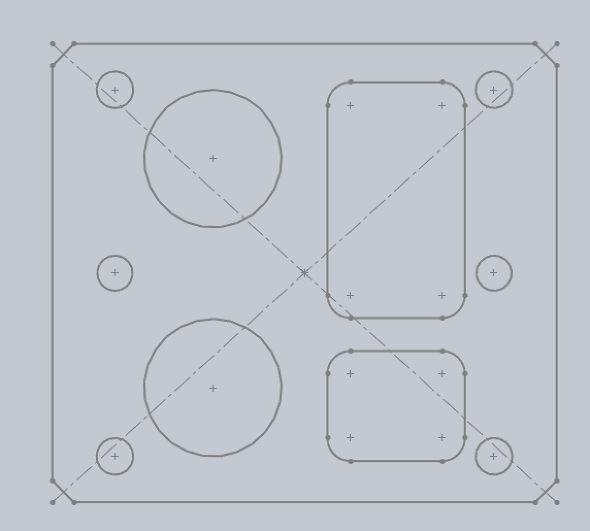
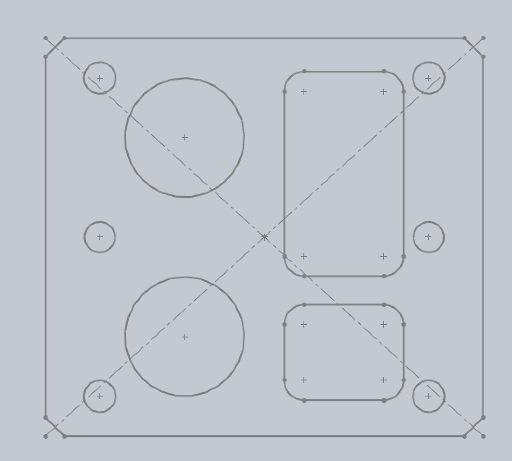
I was then able to quickly create a sketch in Solidworks of the gasket cover. After finishing the CAD sketch, I used GibbsCAM to prepare the part for machining in BU's EPIC.
Almost immediately after milling the first iteration, I knew something was wrong. I quickly discovered that the holes on the sides were significantly misaligned. This seemed to have something to do with the radius/centering of the circles due to the distance of the misalignment.
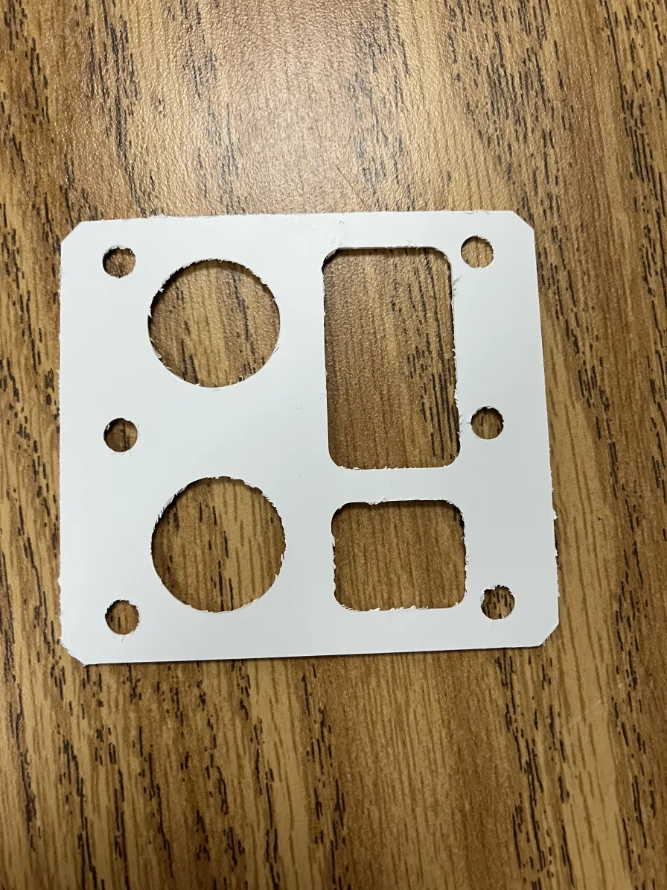
After noticing my blunder, I quickly corrected the error within the CAD model and returned to EPIC to mill another cover. While this second iteration initially seemed to fit correctly, I later found out I had made two small yet important errors. Firstly, I had made the diameter of the larger circles slightly larger than they were supposed to be. Secondly, when I was correcting the spacing of the side holes, I had still left them slightly too close to each other.
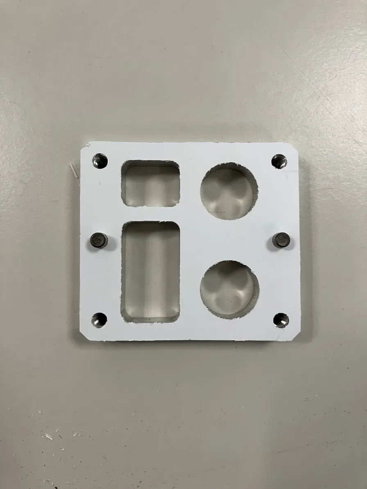After taking further measurements and making the necessary modifications, I milled a third and thankfully final iteration of the gasket cover. Overall, considering the speed at which this was completed and accuracy by the end, I think this was a fairly successful project. That being said, it became clear to me that measuring the gasket multiple times wasn't enough, and I should have additionally focused on checking the measurements at each stage of the process, since they may have been recreated slightly incorrectly at one stage in the process and never noticed until it was too late.